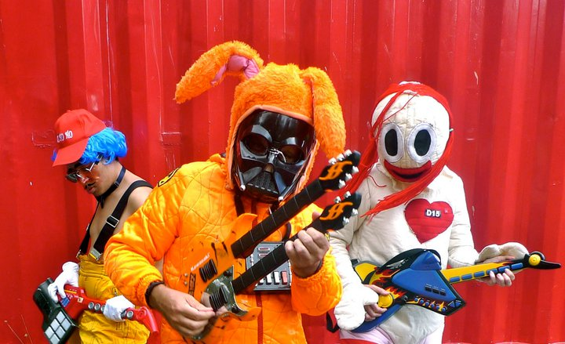

people doing strange things with electricity
what: dorkbot-nyc meeting
where: Location One (Greene between Canal & Grand)
when: Wednesday, 02 February 2011, 7-9pm
$$$: $$$FREE$$$ (donations to Location One appreciated!)
+++++++
The 1161192th dorkbot-nyc meeting took place at 7pm on Wednesday, 02 February, 2011 at Location One in SoHo.
The meeting was free and open to the public. PEOPLE BROUGHT SNACKS TO SHARE!!! WE ATE THEM!!!
+++++++
It featured the thumpetty thump thump of:
Jeremy Slater: INSIDE/OUTSIDE 10
Jeremy Slater will discuss his recent project INSIDE/OUTSIDE 10, an ambient/reactive sound/video installation/performance with dance/movement that was realized at his recent residency at Seoul Art Space_Geumcheon in Seoul, South Korea. INSIDE/OUTSIDE 10 was both a stand alone sound and video installation and interactive/reactive performance sculpture that part of the show "Stability of Objects" at Seoul Art Space in Seoul from December 9th-22nd, 2010.
http://www.jeremyslater.net

Toydeath: Toydeath
Nick Wishart, Melissa Hunt and Teik-Kim Pok will reveal their inspirations and ideas behind the all toy circuit bent band Toydeath formed in 1995. There will be plenty of hands on fun as we un-leash the contents of a toy box that will make any kindergarten green with envy! There will also be a brief side tour to visit Cell, a MIDI controlled pneumatic orchestra.
http://www.toydeath.com
http://www.cell.org.au
Brad Garton and Damon Holzborn: mobile audio apps
Brad Garton and Damon Holzborn will be showing a framework for rapid prototyping and development of iPhone and iPad apps. Based on a port of the ancient and venerable RTcmix music/DSP language to iOS and a Max/MSP prototyping environment, it makes iOS app creation so FUN! so EASY! so DELIGHTFUL! You too can be an APP BILLIONAIRE! Example apps (such as iLooch) will be shown and hawked shamelessly in an effort to break-even with the Apple iPhone app developer fee.
http://music.columbia.edu/~brad
http://www.damonholzborn.com
NEXT MEETING: 02 March 2011